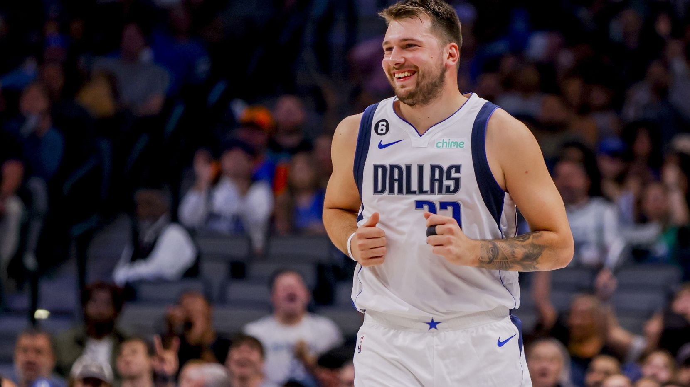
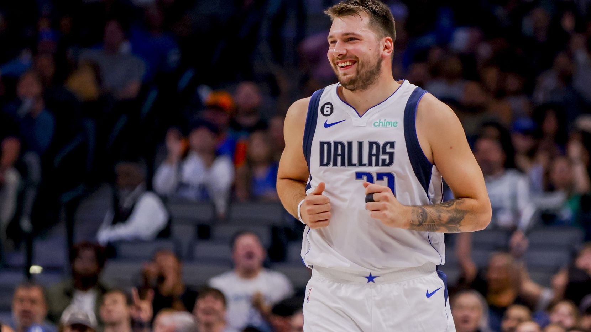

Luka Dončić (Lubiana, 28 febbraio 1999) è un cestista sloveno, dei Dallas Mavericks, che può giocare da playmaker, guardia o ala piccola. Considerato uno dei più grandi talenti del basket mondiale, è professionista in NBA con i Dallas Mavericks. Per le sue origini balcaniche e per la sua precocità nel mondo della pallacanestro (pur essendo giocatori abbastanza diversi) viene spesso accostato a Dražen Petrović.
È figlio di Saša Dončić, ex cestista sloveno di origine serba.
Considerato uno dei migliori giovani europei di tutti i tempi, Dončić può giocare sia da playmaker che da guardia che da ala piccola, grazie alla sua versatilità. È dotato di un notevole bagaglio di esperienze per essere così giovane e questo, unito al suo fisico (201 cm x 104 kg, molto potente per essere un playmaker), gli permette di essere un fattore in tutte le situazioni: è un abile attaccante, capace di creare dal palleggio, a giocare il P&R per servire i compagni sul perimetro o assistere il rollante oppure mettersi in proprio ed arrivare al ferro; gioca spesso in post contro avversari più piccoli di lui. Inoltre, è molto bravo ad assorbire i contatti in area, subendo molti falli per andare in lunetta e cercando spesso il fallo e canestro. Difensivamente, a volte tende a essere superficiale ma è bravo a leggere in anticipo le intenzioni degli avversari. Visto il suo impatto in NBA può essere paragonato a Larry Bird.
Il padre di Luka è Saša Dončić, giocatore di basket sloveno, di origine serba, che ha giocato anche con la maglia della propria nazionale, mentre sua madre Mirjam Poterbin è stata una modella e danzatrice, disciplina con la quale ha vinto il titolo mondiale insieme all'Urška dance group. Dončić ha iniziato a praticare pallacanestro, calcio e judo all'età di 6 anni, presso la scuola elementare Miran Jarc di Lubiana. Con il passare degli anni, Luka si è concentrato sulla pallacanestro, entrando a far parte delle squadre giovanili dell'Union Olimpija. Dončić ha iniziato la sua carriera nelle giovanili della KK Union Olimpija. Nell'aprile 2012 Dončić vince il titolo di MVP al torneo U-13 Lido di Roma, realizzando 54 punti, prendendo 11 rimbalzi e collezionando 10 assist solo nella gara finale giocata contro la SS Lazio. Nel settembre 2012, a soli 13 anni, firma un contratto quinquennale con il Real Madrid. Nel febbraio 2012 Dončić aveva già giocato la Minicopa ACB 2012 vestendo la maglia del Real Madrid, ma essendo solamente in prestito dall'Union Olimpija. In finale ha realizzato 20 punti contro i rivali dell'FC Barcelona. Grazie alle sue ottime prestazioni nelle stagioni passate con la maglia del Real Madrid U-16, nella stagione 2014-15 indossa la maglia della squadra U-18 e del Real Madrid B, dove diventa subito uno dei migliori giocatori, finendo la stagione con 14,5 punti, 6,2 rimbalzi e 3,1 assist di media, portando la sua squadra al primo posto del girone B della Liga EBA. Nel 2015 vince il torneo Ciutat de L'Hospitalet, valido per la qualificazione al torneo finale dell'Euroleague Basketball Next Generation, venendo inserito nell'All-Tournament Team, nonostante sia più giovane di almeno due anni di tutto il resto della sua squadra. A Maggio 2015 Dončić vince il Next Generation Tournament con il Real Madrid, battendo in finale i campioni in carica della Stella Rossa e venendo nominato MVP della competizione.
Il 30 aprile 2015 diventa il più giovane giocatore ad aver vestito la maglia del Real Madrid in una gara di Liga ACB, avendo solo 16 anni, 2 mesi e 2 giorni. Il suo primo canestro è stato una tripla nella partita vinta contro l'Unicaja Málaga. Nella storia del massimo campionato spagnolo, Dončić è il terzo giocatore più giovane ad esser sceso in campo, venendo dopo Ricky Rubio (14 anni e 11 mesi) e Ángel Rebolo (15 anni e 3 mesi) Ha giocato e vinto la Liga ACB 2014-2015 e la Coppa Intercontinentale del 2015. Nella stagione 2016-17 riesce con la sua squadra ad arrivare alle Final Four di Eurolega ma, perdendo entrambe le partite, il Real si classifica solamente quarto. Viene comunque eletto miglior giovane della manifestazione. In campionato, dopo aver concluso al primo posto la stagione, porta la sua squadra in finale playoff dove si arrende per 3-1 al Valencia. Anche in questo caso, viene eletto miglior giovane della competizione. Nella stagione 2017/2018 vince l'Eurolega venendo eletto MVP, MVP delle Final Four (più giovane di sempre in entrambi i casi) e miglior giovane. Viene inserito anche nel miglior quintetto della manifestazione assieme a Nick Calathes, Nando de Colo, Tornik'e Shengelia e Jan Veselý. Inoltre, porta la sua squadra alla finale playoff della Liga ACB, il campionato spagnolo, vincendo la serie per 3-1 contro Saski Baskonia, venendo nominato MVP della competizione anche in questo caso.
Al Draft NBA 2018 del 21 giugno viene selezionato alla terza scelta assoluta dagli Atlanta Hawks, che cedono successivamente i suoi diritti ai Dallas Mavericks in cambio della quinta scelta assoluta Trae Young e di una futura prima scelta al Draft 2019. Durante la stagione diventa il più giovane giocatore con 25 punti e 10 assist in una singola partita dal 2004, anno in cui ci riuscì LeBron James, e il giocatore più giovane di sempre a realizzare una tripla-doppia con almeno 30 punti, battendo il record dello stesso James. È inoltre l'unico teenager ad aver realizzato più di 1 tripla-doppia in una stagione (8 in totale). È il teenager ad aver segnato il maggior numero di punti in stagione prima della pausa dell'All Star Game, l'unico a superare i 1100 punti, precedendo anche Carmelo Anthony e LeBron James. Non è stato convocato all'All-Star Game nonostante fosse arrivato terzo tra i voti dei tifosi dietro a LeBron James e Giannīs Antetokounmpo. Le sue prestazioni gli valgono comunque il premio di Rookie of the Year. La seconda stagione vede la consacrazione a stella di Dončić, che, grazie ad eccellenti prestazioni, si guadagna la convocazione per l'All Star Game 2020, diventando il più giovane europeo a riuscire a parteciparvi. Durante la regular season riesce a battere alcuni record di precocità, trascinando (grazie anche alla crescita in rendimento del compagno Kristaps Porziņģis) i Dallas Mavericks ai playoff dopo 3 anni di assenza. L'8 agosto viene nominato come finalista, insieme a Bam Adebayo e Brandon Ingram, per il Most Improved Player Award, riconoscimento che ogni anno la NBA conferisce al giocatore che più si è migliorato rispetto alle stagioni precedenti. Al primo turno dei play-off i Mavericks, settima testa di serie, si trovano di fronte i Clippers di Kawhi Leonard e Paul George, seconda testa di serie e candidata alla vittoria del titolo. In gara 1 Dončić realizza 42 punti, massimo nella storia per un rookie al debutto nei Playoff, non riuscendo comunque ad evitare la sconfitta dei suoi. I Mavericks si riscattano in gara 2, dove Dončić, grazie ai 28 punti realizzati, diventa il secondo giocatore (sotto George Mikan) con più punti a referto nelle prime due partite di postseason in carriera (70), superando, al secondo posto, Kareem-Abdul Jabbar. Dopo un'opaca gara 3, in cui Dončić è costretto a uscire per una distorsione alla caviglia, in gara 4 i Mavericks, orfani di Porzingis, si impongono al supplementare, con Dončić che diventa il più giovane di sempre a segnare un buzzer beater in una partita di Playoff, il più giovane a realizzare una tripla doppia con almeno 40 punti, e uno dei tre giocatori (insieme a Oscar Robertson e Charles Barkley) ad aver realizzato almeno 40 punti, 15 rimbalzi e 10 assist in una partita di post-season. I Mavericks perdono però la serie contro i Clippers in 6 gare.
Dončić doveva giocare il campionato europeo Under-16 del 2014, ma ha dovuto saltarlo a causa di un infortunio. A Dicembre 2014 Luka ha indossato la maglia della Slovenia Under-16 in un torneo amichevole in Ungheria. Dončić ha concluso il torneo con 35.3 punti e 7.6 rimbalzi a partita, tirando con l'81% da due punti e il 57% da tre punti. Dončić prende parte al campionato europeo del 2017 come una delle due principali stelle della nazionale slovena, assieme al playmaker Goran Dragić. Conclude la competizione europea con una media di 14.3 punti, 8.1 rimbalzi e 3.6 assist a partita e la medaglia d'oro avendo vinto la competizione con la sua Nazionale (nonostante un piccolo infortunio alla caviglia gli abbia tolto la possibilità di finire la finale). Inoltre, viene inserito nel miglior quintetto della competizione assieme a Pau Gasol, Goran Dragić (MVP del torneo), Aleksej Šved e Bogdan Bogdanović.
Fonte: Wikipedia